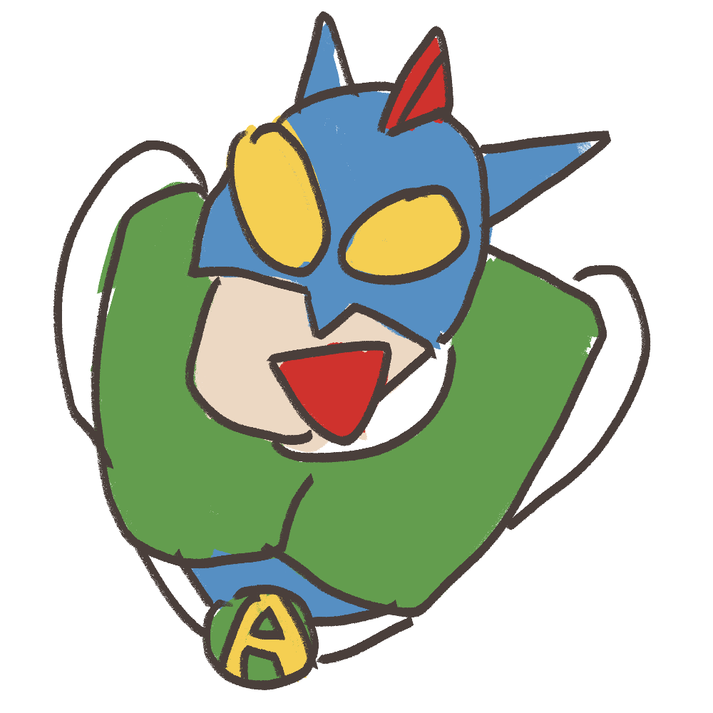
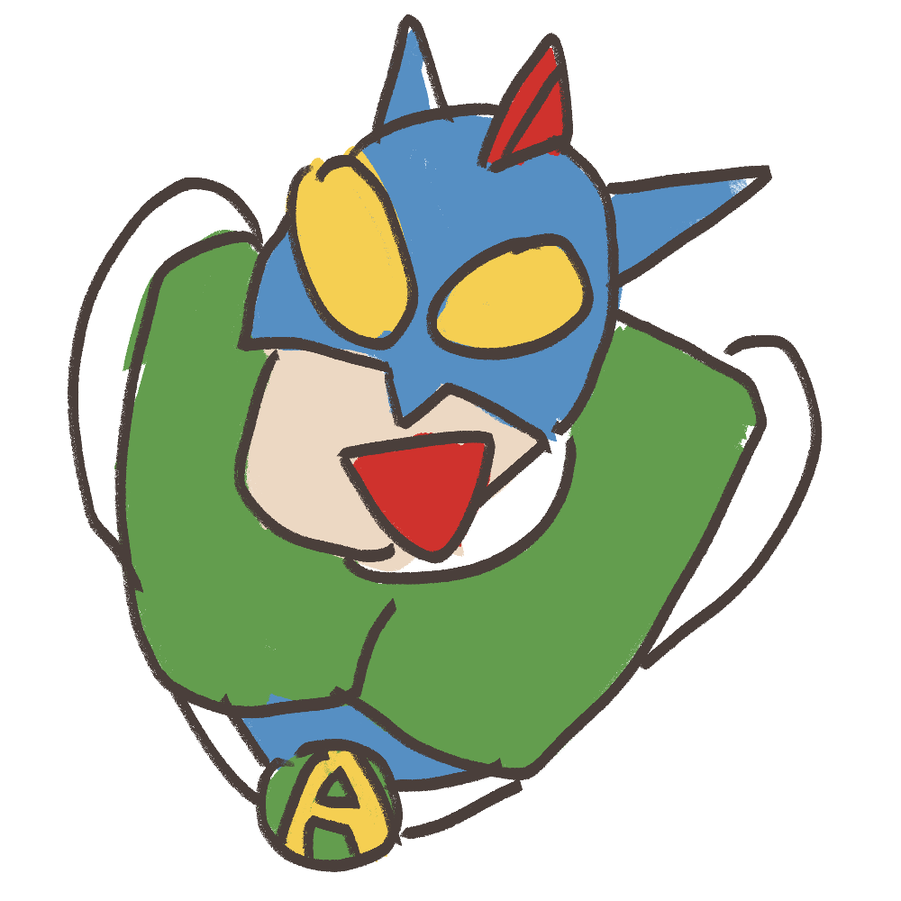
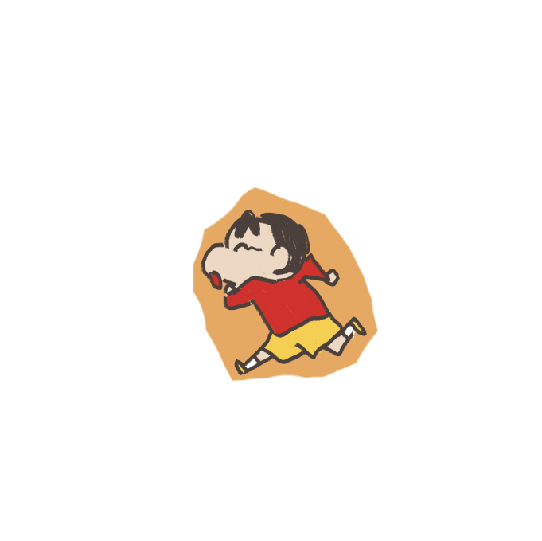
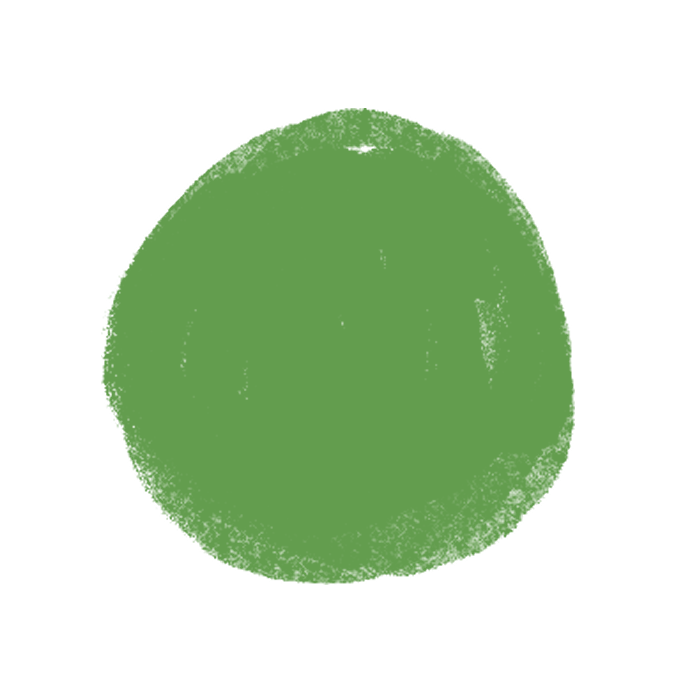

그림 동화가 유아의 행동에 미치는 영향
유아의 공격성 행동 감소 및 친사회적 행동 증진에서 그림동화의 효과 확인 연구
그림동화가 유아의 행동에 미치는 영향
 

유아는 가정, 학교, 사회의 다양한 상황에서 사회적 행동을 학습하게 된다. 가정에서는 가족들과의 생활에서, 유아교육기관에서는 다른 유아들과의 생활에서, 그리고 사회에서는 또 다른 유형의 사람들과의 관계 속에서 행동을 배우고 반응하며, 각자가 속해 있는 그 사회-문화적 맥락에서 성장 발달해 간다.
가정은 유아가 처음으로 사회적 행동을 배우는 곳이다. 부모와 형제와의 상호작용을 통해 의사소통과 감정 표현을 익히고, 칭찬과 꾸짖음을 통해 행동의 결과를 이해한다. 협력과 역할 분담을 통해 책임감과 관계 형성을 배울 수 있다.
사회적 환경에서 유아는 다양한 사람들과 관계를 맺으며 행동 방식을 배운다. 놀이터나 공공장소에서 차례를 기다리거나 공유하는 태도를 익히며, 사회적 규범과 문화를 자연스럽게 내면화한다.
학교는 유아가 친구들과 어울리며 사회적 기술을 확장하는 공간이다. 교사에게서 규칙과 권위 존중을 배우고, 놀이와 협력을 통해 갈등 해결과 의견 존중을 익히며 집단 생활에 적응한다.
그림동화는 유아로 하여금 삶의 의미를 발견할 수
있도록
하여 성장발달에 지대한 영향을 미치는 이야기 그림책으로서
눈으로 보는 시각적인 측면뿐만 아니라 경우에 따라서 청각,
촉각적인 효과까지도 포함하는 문학의 독특한 장르이다.
그림동화는 유아의 전반적인 성장, 발달에 긍정적인 영향을 미치는 것으로 간주되고 있다. 뿐만 아니라 그림동화는 유아들이 현실생활에서 나타나는 심리학적 현상, 즉 내적 불안과 갈등을 잘 표현하고 그 해결책을 제시해 준다는 점에서도 심리 치료적 기능을 갖고 있다고 여겨진다.
 
유아의 공격성 행동 감소 및 친사회적 행동
증진에서
그림동화의 효과 확인 연구
본 연구는 그림동화가 유아의 공격적 행동을 감소시키고 친사회적 행동을 증진시키는 효과를 분석하기 위해 진행되었다. 연구 대상은 전라북도 전주시에 위치한 D어린이집에서 선정되었으며, 이 어린이집은 연구의 신뢰성을 높이기 위해 유아들의 연령, 교육 수준, 그리고 사회·경제적 배경이 비교적 유사한 환경을 가진 곳으로 선택되었다. 대상자는 만 5세 유아 중 남녀 각각 20명씩 총 40명으로 구성되었다. 이러한 표본은 다양한 성별과 행동 패턴을 고르게 포함하기 위해 의도적으로 균형 있게 배정되었다.
남
20명
여
20명

총
40명
교육방법에 의한 유아교육기관의 변인을 통제하기 위하여 2개 학급을 동일한 어린이집에서 선정하여 그림동화 프로그램을 실시하는 집단과 실시하지 않는 통제집단으로 나누어 연구를 진행하였다. 이들 실험 집단은 만 5세 유아 20명(남:10, 여: 10)으로 구성하고 통제집단도 동일하게 구성하였다.
친사회적 행동 검사의 내용 구성
1. 장난감을 뺏길 때 단호하게 말하기
2. 양해 구하기
3.
선생님의 지시에 따르기
4. 힘들어도 열심히 하기
5.
상황에 알맞게 부탁하기
1. 친구들과 함께 놀고 싶을 때 참여하기
2. 자기 차례
기다리기
3. 친구와 놀이감 나누어 가지고 놀기
4.
친구 도와주기
5. 친구의 감정 인식하기
1. 친구로부터 소외당했을 때
2. 친구가 놀릴 때
3.
화가 무조건 날 때
4. 친구가 공평하지 못할 때
5.
자기가 잘못된 행동을 했을 때
본 그림동화 활동은 2007년 6월 2일부터 2007년 9월 16일까지 실시했으며 매주 1회 자율 활동 시간을 활용하여 매주 1편씩, 총 13편의 작품을 유아들이 접할 수 있도록 하였다.
그림동화 프로그램에 참여한 실험집단의 유아들은 참여하지 않은 통제집단 유아들에 비해 공격성 행동이 크게 감소되었다. 그림동화 프로그램에 참여한 실험집단의 유아들은 참여하지 않은 통제집단 유아들에 비해 친사회적 행동이 증진되었다. 그림동화 프로그램은 유아의 친사회적 행동 하위영역 즉, 유치원 적응 능력, 대인관계 형성 능력, 개인정서 조절 능력에도 긍정적인 효과를 미친 것으로 나타났다.
이러한 결과로 비추어 볼 때, 그림동화는 유아가 같은 목표를 향해 정해진 규칙에 따라 함께 행동하고 질서를 지키며, 이로 인해 사회적으로 적응해 가는 능력을 키울 수 있도록 도와준다고 볼 수 있다.
@한경국립대학교 미디어 디자인2
2023820069 이단비
참고자료:
「그림동화를 활용한 문학활동 프로그램이 유아의 공격성 행동과
친사회적 행동에 미치는 효과」 임해순 외 2인
그림동화 프로그램에 참여한 실험집단과 통제집단의 친사회적 행동 검사 점수를 비교해 본 결과 실험집단의 평균 점수는 13.90으로 나왔으며, 통제집단은 11.35로 실험집단의 평균점수가 2.55 높게 나타났다. 사전, 사후검사간의 차이에 있어서도 실험집단에서 유의한 차이가 있는 것으로 나타났다.
그림동화 프로그램에 참여한 실험집단과 통제집단의 공격성 행동 검사 점수를 비교해 본 결과 실험집단의 평균점수는 18.20으로 나왔으며, 통제집단은 29.27로 실험집단의 평균점수가 11.07 낮게 나타났다. 사전, 사후검사간의 차이에 있어서도 실험집단에서 유의한 차이가 있는 것으로 나타났다.